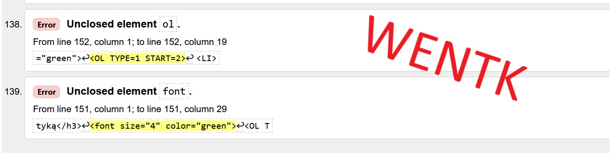
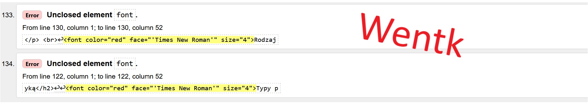

1)Co to jest walidacja strony HTML:
Walidacja strony HTML to proces sprawdzania poprawności kodu HTML pod kątem zgodności
z obowiązującymi standardami, w celu wykrycia błędów i nieprawidłowości w strukturze
dokumentu.
2)Podaj co to jest walidator HTML
Walidator HTML to narzędzie, które sprawdza poprawność kodu HTML pod względem
zgodności ze standardami i wskazuje znalezione błędy oraz nieprawidłowości w kodzie strony
internetowej. Walidatory są najczęściej w postaci strony WWW.
3)Czym zajmuje się organizacja W3C (skrót od World Wide Web Consortium) oraz omów skrótu.
Międzynarodowego konsorcjum zajmującego się opracowywaniem standardów dla stron
internetowych. Języki hipertekstowe są bardzo dobrze udokumentowane. Ich tworzeniem
i wytyczaniem standardów zajmuje się W3C. Organizacja ta dba o to, aby strony i aplikacje
internetowe działały poprawnie, były dostępne i zgodne z ustalonymi standardami.

